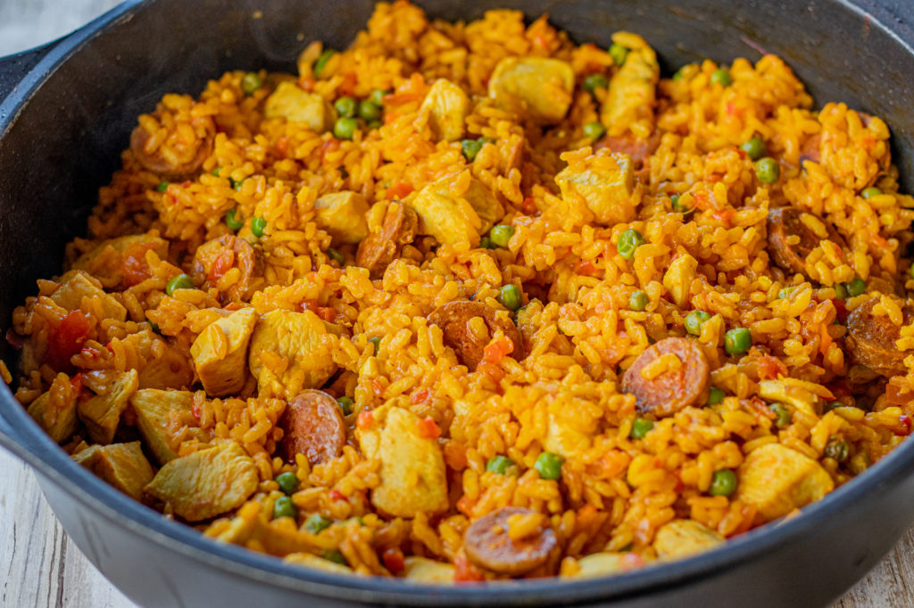

Chicken Chorizo Paella

Home
Description
’ve made a few paellas in my time. The biggest one was for about 800 people in a village in Spain and it was hard work, but an incredible experience. The Spanish can be quite protective about what is and what isn’t a paella, but at the same time, the spirit of their cooking has always been flexible to whatever meat, fish, seafood or game can be found. I’ve eaten and enjoyed many paellas, and I hope you like my humble, great-value expression of one.
Ingredients
- 2 cloves of garlic
- 1 onion
- 70g of pork chorizo
- 1 teaspoon smoked paprika
- 300g chicken thight
- 1 carrot
Steps
- Heat the olive oil in a deep frying pan over a high heat. Brown the chicken all over – don’t cook completely. Once browned, transfer to a plate.
- Reduce the heat to low, add the onions and cook slowly until softened, about 10 mins. Add the garlic, stir for 1 min, then toss in the chorizo and fry until it releases its oils.
- Stir in the spices, then tip in the rice. Stir to coat the rice in the oils and spices for about 2 mins, then pour in the stock. Bring to the boil, return the chicken to the pan and simmer for about 20 mins, stirring occasionally.
- Add the peas to the pan and simmer for a further 5 mins until the rice is cooked and the chicken is tender. Season well and serve with the lemon and parsley.